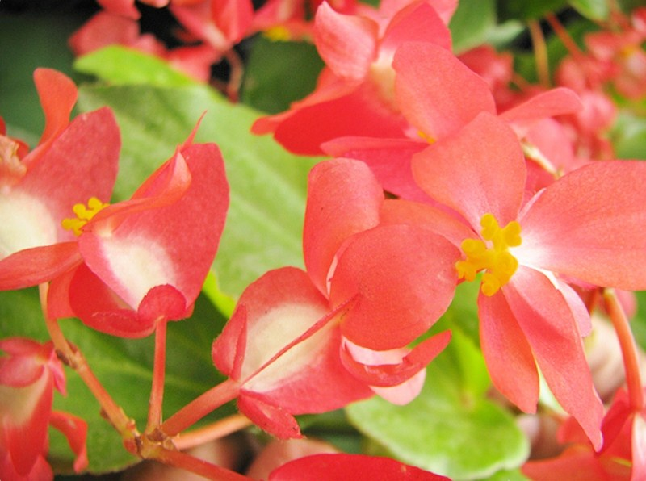
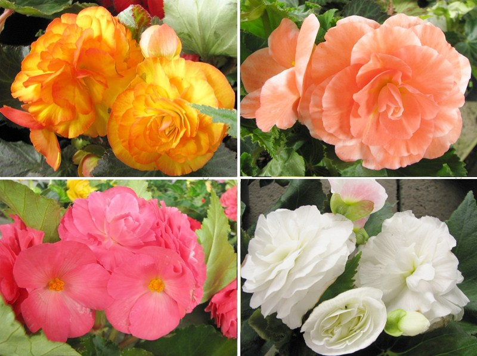
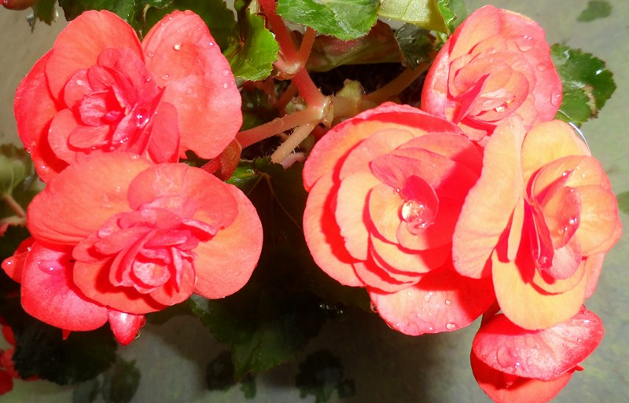
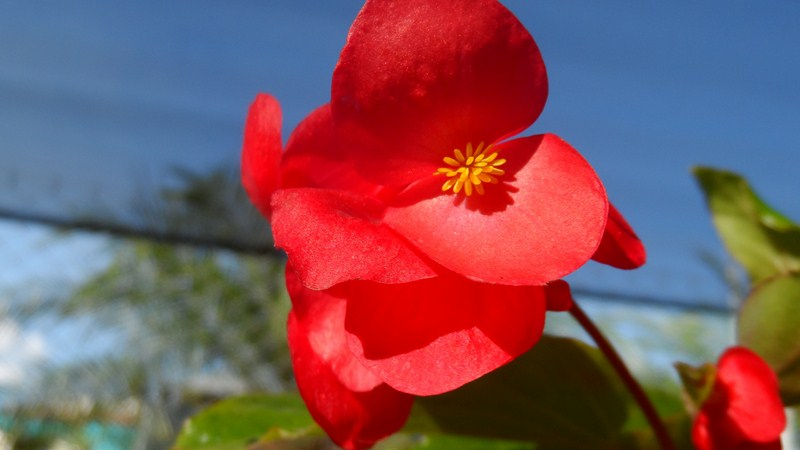

El género begonia comprende alrededor de 1.500 especies, de las que alrededor de 150, además de casi 10.000 variedades e híbridos, se comercializan para su uso en jardinería. Son oriundas de las regiones tropicales y subtropicales de América, África y Asia. El único otro miembro de la familia Begoniaceae es Hillebrandia, un género con una sola especie en las islas Hawái, y el género Symbegonia que recientemente se incluyó en Begonia.
El apelativo del género, acuñado por Charles Plumier, un referente francés en botánica, honra a Michel Bégon, un gobernador de la ex Colonia francesa de Haití, y fue adoptado por Linneo
Caracteristicas de las Begonias
Son plantas terrestres (a veces epifitas) herbáceas, con tallos acuosos, algunas de porte semiarbustivo o incluso pequeños árboles y otras trepadoras, perennes excepto en climas fríos, es el aérea donde la planta muere. Las flores son muy diversas tanto en forma y tamaño como en color; son unisexuales, la masculina contiene numerosos estambres, la femenina posee un ovario inferior con 2 o 4 estigmas ramificados. El fruto es una cápsula alada que contiene gran cantidad de diminutas semillas. Las hojas son asimétricas y al igual que las flores, difieren mucho de una a otra especie, desde variadas como las de Begonia brevirimosa a verde brillante en Begonia ulmifolia.
Se distinguen 3 grupos básicos, dependiendo de la raíz:
Begonias de raíces fibrosas como Begonia semperflorens y sus híbridos, suele cultivarse en interior. Soporta mas el sol directo, aunque no las heladas. Como su nombre indica, florece durante casi todo el año.Originaria del Brasil.
Begonias rizomatosas, como B. rex, muy apreciada por su follaje.
Begonias tuberosas, B. x thuberhybrida, con flores muy grandes.
Algunas especies de begonias se cultivan por su atractivo follaje más que por sus flores:son muy hermosas
La especie B. masoniana Irmsch. ex Ziesenh.
posee bonitas hojas en forma de corazón, finamente arrugadas, de color verde amarillento y con un dibujo interior en marrón oscuro muy señalado.
B. metallica W.G.Sm. de un elegante follaje verde oscuro brillante casi metálico, de ahí su nombre.
B. imperialis Lem. tiene hojas de color verde esmeralda o bronce con un suave aspecto aterciopelado.
Los diferentes grupos tienen distintos requisitos de cultivo, pero la mayoría requieren temperaturas cálidas, sombra ligera (pocas toleran el sol directo), suelo bien drenado que no esté constantemente húmedo, pero que tampoco se deje secar completamente. Muchas de las especies crecen y florecen durante todo el año, aunque las tuberosas normalmente tienen un periodo letárgico durante el cual los tubérculos se pueden sacar y guardar en un lugar fresco y seco.

Begonia Dragón

Begonia de flor Grande

Begonia Eliator

Begonia Pichon
CONTACTOS
Vivero Florisanto
Telefonos: 3135058066 - 3126688884
Email:vivero-florisanto@hotmail.com
Dirección: Calle 29 # 38-70 Via Planeta Rica K2